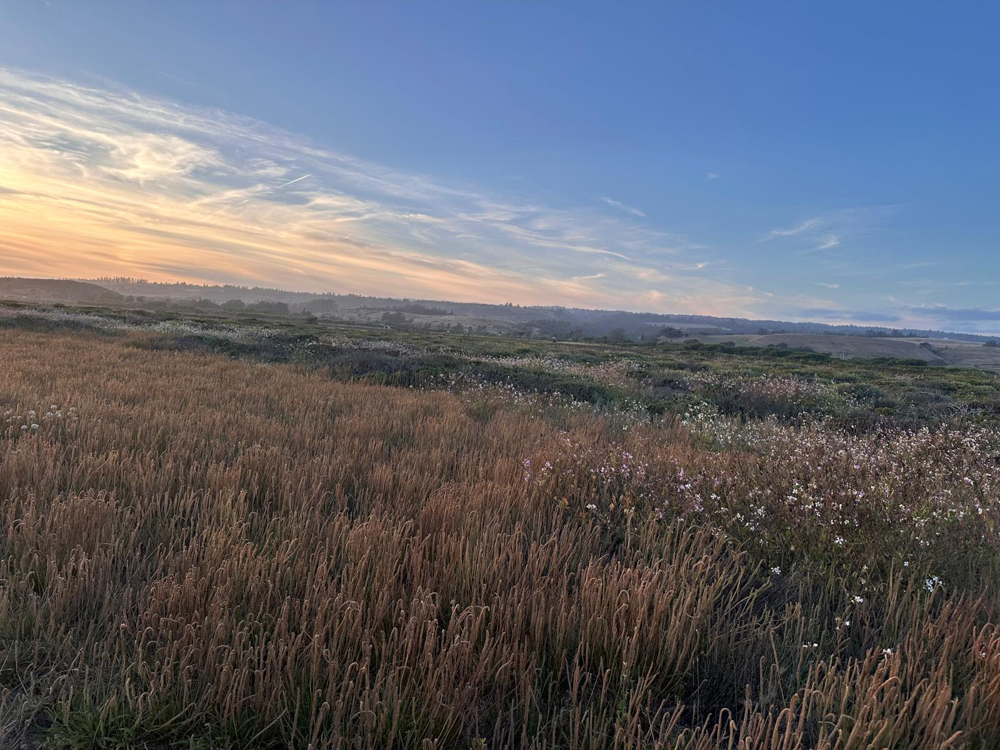

Classes
Knowledge that empowers your self-care — so you understand what you take and why.
Explore the classes →
Rooted in nature · Backed by science · Made by a PA
A line of medicinal mushroom & herbal extracts, formulated by a Physician Assistant — plus classes to help you use nature wisely.
Six steps.·Six months.·Maximum extraction.
What that means
Three simple promises shape every bottle — here's what each one really means for what you're taking.
Each blend moves through a careful, multi-stage extraction — nothing rushed and nothing skipped — so both the water- and alcohol-soluble compounds are drawn out in full.
Slow, low-and-steady extraction over months lets fresh mushrooms and botanicals fully release their beta-glucans, polyphenols, and adaptogens — the good stuff cheap tinctures leave behind.
The result is a whole, full-spectrum extract made in small batches with nothing artificial added — so you actually get what the label promises.
Our approach
Living Terrain is a small line of botanical extracts made by Serena Ling, PA-C — combining functional mushrooms and synergistic herbs with evidence-informed extraction methods. No hype, no fillers. Just carefully sourced ingredients and plain-spoken guidance so you can make confident choices about your health.
The Living Terrain philosophy
Your body is a living terrain — an ecosystem you tend for long-term vitality, preventing the imbalances that lead to illness.
Knowledge that empowers your self-care — so you understand what you take and why.
Explore the classes →Step away from daily demands and build the habits that carry vitality forward.
Explore the retreats →A six-step, six-month extraction with synergistic ingredients for absorption — gentle immune modulators safe for daily use.†
Explore the extracts →
Learn with us
From understanding medicinal mushrooms to building your own home apothecary, Serena's classes are engaging, approachable, and grounded in both modern evidence and centuries of traditional knowledge.
See the full schedule on our class calendar — including Waldorf for Adults, a restorative art practice for creative rhythm and nervous-system regulation.
View the class calendarWhy Living Terrain
Every blend is formulated by a board-certified Physician Assistant with training in herbalism, nutrition, and medicinal mushrooms.
A deliberate six-step, six-month process draws out beta-glucans, polyphenols, and adaptogenic compounds — for maximum extraction and a true full-spectrum result.
Whole-food botanicals, chosen to work together — grown and gathered fresh, extracted in small batches, with nothing artificial added.
The extracts
Each 2 fl oz dropper bottle is built around a purpose — from daily resilience to a calmer night. Full details & Supplement Facts live on the Extracts page.

Everyday Resilience
Turkey Tail · Reishi · Elderberry · Lemon Balm
Learn more →
Neurocognitive Support
Reishi · Ashwagandha · Lion's Mane
Learn more →
Rest & Restoration
Passionflower · Reishi · Lemon Balm
Learn more →
Rapid Adaptation
Mimosa · Reishi · Oyster Mushroom
Learn more →
Neurologic Balance
Feverfew · Lemon Balm · Reishi · Turkey Tail
Learn more →

The founder
Serena Ling, PA-C bridges conventional medicine and traditional healing — with clinical experience across oncology, surgery, family and emergency medicine, alongside years of study in herbalism, Tibetan medicine, nutrition, and medicinal mushrooms.
She founded Living Terrain to translate scientific research and traditional wisdom into practical tools people can actually understand and trust.
Read Serena's story† These statements have not been evaluated by the Food and Drug Administration. This product is not intended to diagnose, treat, cure, or prevent any disease.